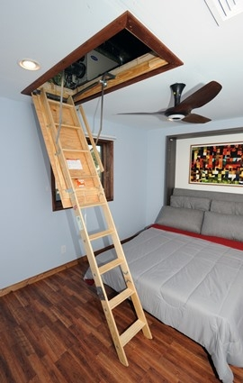

![Examples of where to insulate.
1. In unfinished attic spaces, insulate between and over the floor joists to seal off living spaces below. If the air distribution is in the attic space, then consider insulating the rafters to move the distribution into the conditioned space.
(1A) attic access door
2. In finished attic rooms with or without dormer, insulate
(2A) between the studs of "knee" walls,
(2B) between the studs and rafters of exterior walls and roof,
(2C) and ceilings with cold spaces above.
(2D) Extend insulation into joist space to reduce air flows.
3. All exterior walls, including
(3A) walls between living spaces and unheated garages, shed roofs, or storage areas;
(3B) foundation walls above ground level;
(3C) foundation walls in heated basements, full wall either interior or exterior.
4. Floors above cold spaces, such as vented crawl spaces and unheated garages. Also insulate
(4A) any portion of the floor in a room that is cantilevered beyond the exterior wall below;
(4B) slab floors built directly on the ground;
(4C) as an alternative to floor insulation, foundation walls of unvented crawl spaces.
(4D) Extend insulation into joist space to reduce air flows.
5. Band joists.
6. Replacement or storm windows and caulk and seal around all windows and doors.
Source: Oak Ridge National Laboratory](../../sites/prod/files/styles/borealis_default_hero_respondsmall/public/where_to_insulate.jpg@itok=cjpjaodx "Examples of where to insulate.
1. In unfinished attic spaces, insulate between and over the floor joists to seal off living spaces below. If the air distribution is in the attic space, then consider insulating the rafters to move the distribution into the conditioned space.
(1A) attic access door
2. In finished attic rooms with or without dormer, insulate
(2A) between the studs of \"knee\" walls,
(2B) between the studs and rafters of exterior walls and roof,
(2C) and ceilings with cold spaces above.
(2D) Extend insulation into joist space to reduce air flows.
3. All exterior walls, including
(3A) walls between living spaces and unheated garages, shed roofs, or storage areas;
(3B) foundation walls above ground level;
(3C) foundation walls in heated basements, full wall either interior or exterior.
4. Floors above cold spaces, such as vented crawl spaces and unheated garages. Also insulate
(4A) any portion of the floor in a room that is cantilevered beyond the exterior wall below;
(4B) slab floors built directly on the ground;
(4C) as an alternative to floor insulation, foundation walls of unvented crawl spaces.
(4D) Extend insulation into joist space to reduce air flows.
5. Band joists.
6. Replacement or storm windows and caulk and seal around all windows and doors.
Source: Oak Ridge National Laboratory")
Examples of where to insulate. 1. In unfinished attic spaces, insulate between and over the floor joists to seal off living spaces below. If the air distribution is in the attic space, then consider insulating the rafters to move the distribution into the conditioned space. (1A) attic access door 2. In finished attic rooms with or without dormer, insulate (2A) between the studs of "knee" walls, (2B) between the studs and rafters of exterior walls and roof, (2C) and ceilings with cold spaces above. (2D) Extend insulation into joist space to reduce air flows. 3. All exterior walls, including (3A) walls between living spaces and unheated garages, shed roofs, or storage areas; (3B) foundation walls above ground level; (3C) foundation walls in heated basements, full wall either interior or exterior. 4. Floors above cold spaces, such as vented crawl spaces and unheated garages. Also insulate (4A) any portion of the floor in a room that is cantilevered beyond the exterior wall below; (4B) slab floors built directly on the ground; (4C) as an alternative to floor insulation, foundation walls of unvented crawl spaces. (4D) Extend insulation into joist space to reduce air flows. 5. Band joists. 6. Replacement or storm windows and caulk and seal around all windows and doors. Source: Oak Ridge National Laboratory
For optimal energy efficiency, your home should be properly insulated from the roof down to its foundation. In addition to insulation, consider moisture and air leakage control in each area of your house. If radon is an issue where you live, you’ll also need to consider radon and radon-resistant construction techniques as you research foundation insulation options. In addition, if you live in an area with termites, you’ll have to consider how termite protection will affect the choice and placement of insulation in your home.
Attic Insulation
Loose-fill or batt insulation is typically installed in an attic. Loose-fill insulation is usually less expensive to install than batt insulation, and provides better coverage when installed properly. See more on different types of insulation.
To find out if you have enough attic insulation, measure the thickness of the insulation. If it is less than R-30 (11 inches of fiberglass or rock wool or 8 inches of cellulose), you could probably benefit by adding more. Before insulating, seal any air leaks and make roof and other necessary repairs. If it is located in a conditioned part of the house, also remember to insulate and air seal your attic access.
Insulate and air seal any knee walls -- vertical walls with attic space directly behind them -- in your home as well. In addition, if you're building a new home or remodeling, make sure any attic decking that provides additional storage space or a platform for a heating and/or cooling unit or hot water tank is raised above the ceiling joists to leave room for adequate insulation. If the air distribution system is not within the conditioned space but within the attic, insulating the rafters will enclose the distribution system. Finally, if you live in a hot or warm climate, consider installing a radiant barrier in your attic to reduce summer heat gain.
Duct Insulation
If the ducts in your home are in unconditioned space, seal and insulate them. If you’re building a new house, place ducts in the conditioned space to avoid the energy losses associated with most duct systems.
Cathedral Ceiling Insulation
Properly insulating your cathedral ceilings will allow ceiling temperatures to remain closer to room temperatures, providing an even temperature distribution throughout the house. Cathedral ceilings must provide space between the roof deck and home’s ceiling for adequate insulation and ventilation. This can be achieved through the use of truss joists, scissor truss framing, or sufficiently large rafters. For example, cathedral ceilings built with 2x12 rafters have space for standard 10-inch batts (R-30) and ventilation. Unvented (hot roof design) cathedral ceilings are also an option. The hot roof design allows more insulation to be installed in the roof cavity as the need for a vent space is eliminated. It is important that the roof cavity be totally air sealed from the conditioned space below to prevent moisture intrusion and roof degradation.
Foil-faced batt insulation is often used in cathedral ceilings because it provides the permeability rating often required for use in ceilings without attics. A vent baffle should be installed between the insulation and the roof decking to maintain the ventilation channel.
Consider using high-density R-30 batts, which are as thick as R-25 batts, but fit into 2x10 framing. You can also add rigid foam insulation under the rafters, which adds R-value and eliminates thermal bridging through wood rafters. However, rigid foam insulation must be covered with a fire-rated material when used on the interior of a building. Half-inch drywall is usually sufficient, but check with local building officials before installing.
Exterior Wall Insulation
If your attic has enough insulation and proper air sealing, and your home still feels drafty and cold in the winter or too warm in the summer, chances are you need to add insulation to the exterior walls. This is more expensive and usually requires a contractor, but it may be worth the cost—especially if you live in a very cold climate. If you replace the exterior siding on your home, consider adding insulation at the same time.
In an existing home, consider using blow-in insulation, which, when installed with the dense pack technique, will provide significant air sealing. It can be added to exterior walls without much disturbance to finished areas of your home. If you’re remodeling and your wall cavities will be open, look into two-part spray foam or wet spray cellulose insulation. If your wall cavities are not going to be open, you could consider injectable spray foam insulation. If you’ll be doing the work yourself, blanket (batt and roll) insulation, while not capable of providing an air seal as dense pack and two-part spray foam will, is an affordable option.
In a new home, first see our information about insulating a new home, which will help you choose from among the many types of insulation on the market. If you’re in the design phase of planning your new home, consider structural insulated panels, insulating concrete forms, and insulated concrete blocks. These materials literally have insulation built in, and houses built using these products often have superior insulating qualities and minimal thermal bridging.
If you’re building a traditional framed house, consider using advanced wall framing techniques. These techniques improve the whole-wall R-value by reducing thermal bridging and maximizing the insulated wall area.
Also consider using insulating wall sheathing rather than wood sheathing products. Half-inch foam sheathing provides an R-value of R-2 to R-3.5 and thicker foam board yields even higher R-values. Foam sheathing:
- Provides a continuous layer of insulation, which reduces thermal bridging through wood studs, saving energy and improving comfort.
- Is easier to cut and install than heavier sheathing products.
- Protects against condensation on the inside wall by keeping the interior of the wall warmer.
- Usually costs less than plywood or oriented strand board (OSB).
If you replace plywood or OSB with foam sheathing, your walls will require bracing or other structural reinforcement.
Insulating Floors Above Unheated Garages
When insulating floors above unconditioned garages, first seal all possible sources of air leakage. This strategy has the added benefit of minimizing the danger of contaminants (from car exhaust, paint, solvents, gardening supplies, etc.) in the garage migrating into the conditioned space. Also install an air barrier to prevent cold air in the garage from "short circuiting" the insulation underneath the subfloor.
Foundation Insulation
In addition to reducing heating costs, a properly insulated foundation will keep below-grade rooms more comfortable and prevent moisture problems, insect infestation, and radon infiltration. In new construction, consider construction techniques that provide both foundation structure and insulation, such as insulating concrete forms and insulating concrete blocks.
During the construction process, many builders insulate the outside of foundation walls before backfilling. This strategy is possible but impractical and disruptive for existing homes. Optimal foundation insulation materials and placement vary by climate, so consult a local insulation professional if you’re planning a new home.
Basement Insulation
A properly insulated basement can save you money on heating and provide a dry, comfortable living space. In most cases, a basement with insulation installed on its exterior walls should be considered a conditioned space. Even in a house with an unconditioned basement, the basement is more connected to other living spaces than to the outside, which makes basement wall insulation preferable to ceiling insulation.
In new construction, adding insulation on the exterior of the basement walls will:
- Minimize thermal bridging and reduce heat loss through the foundation.
- Protect the damp-proof coating from damage during backfilling.
- Provide some protection against moisture intrusion.
- Make the foundation part of the thermal mass of the conditioned space, thereby reducing interior temperature swings.
- Reduce the potential for condensation on surfaces in the basement.
- Conserve room area, relative to installing insulation on the interior.
In an existing home, adding insulation to the exterior of the basement walls is impractical. Interior basement wall insulation has the following advantages:
- It is much less expensive to install than exterior insulation for existing buildings.
- Almost any insulation type can be used.
- It eliminates the threat of insect infestation.
Here are a few things to consider when installing interior basement wall insulation:
- Many insulation types require a fire-rated covering because they release toxic gases when ignited.
- Interior insulation reduces usable interior space by a few inches.
- It doesn't protect the damp-proof coating like exterior insulation does.
- If perimeter drainage is poor, the insulation may become saturated by moisture weeping through foundation walls.
- Superior air-sealing details and vapor diffusion retarders are important for adequate performance.
To determine appropriate R-values for basement walls in your area, use these R-value recommendations. Then choose the type of insulation:
- Blanket (batt and roll) insulation
- Insulating concrete blocks (new construction)
- Foam board insulation
- Insulating concrete forms (new construction)
- Loose-fill insulation
- Sprayed foam insulation (good choice for finished basements).
Moisture control is particularly important for basements, because they are notorious for problems with water intrusion, humidity, and mold.
Crawlspace Insulation
How you insulate a crawlspace depends on whether it's ventilated or unventilated. Most building codes require vents to aid in removing moisture from the crawlspace. However, many building professionals now recognize that building an unventilated crawlspace (or closing vents after the crawlspace dries out following construction) is the best option in homes using proper moisture control and exterior drainage techniques.
If you have or will have an unventilated crawlspace, the best approach is to seal and insulate the foundation walls rather than the floor between the crawlspace and the house. This strategy has the advantage of keeping piping and ductwork within the conditioned volume of the house so these building components don't require insulation for energy efficiency or protection against freezing. The downside of this strategy is that rodents, pests, or water can damage the insulation and the crawlspace must be built airtight and the air barrier maintained. It’s best to locate the access door to the crawlspace inside the home through the subfloor unless you build and maintain an airtight, insulated access door in the perimeter wall.
Slab-On-Grade Insulation
Cold concrete slabs can be a source of discomfort in a home. An insulated slab is easier to heat, and placing the mass of the slab within your home’s thermal envelope helps moderate indoor temperatures.
Insulating a slab in an existing home can be expensive and disruptive, but If the slab in your home is cold it is possible to dig around the perimeter of the house and install insulation, usually foam board. In most parts of the United States, insulating the exterior edge of a slab can reduce heating bills by 10% to 20%.
Installing slab insulation during the construction process is more straightforward. Slab insulation, typically foam board, is installed either directly against the exterior of the slab and footing before backfilling or under the slab and along the inside of the stem wall of the foundation. Construction details vary widely, so it’s best to consult a building professional in your area. Building America’s climate-specific publications also have useful construction details for different climate zones.
Termites can tunnel undetected through exterior slab insulation to gain access to the wood framing in a home's walls. As a result, some insurance companies won't guarantee homes with slab insulation against termites. Building codes in several southern U.S. states prohibit installing foam insulation in contact with the ground. Slab foundations with interior insulation provide more termite resistance, but some builders in the southeastern United States have even reported termite infestations through foam insulation on contained slabs.
Learn More
Links